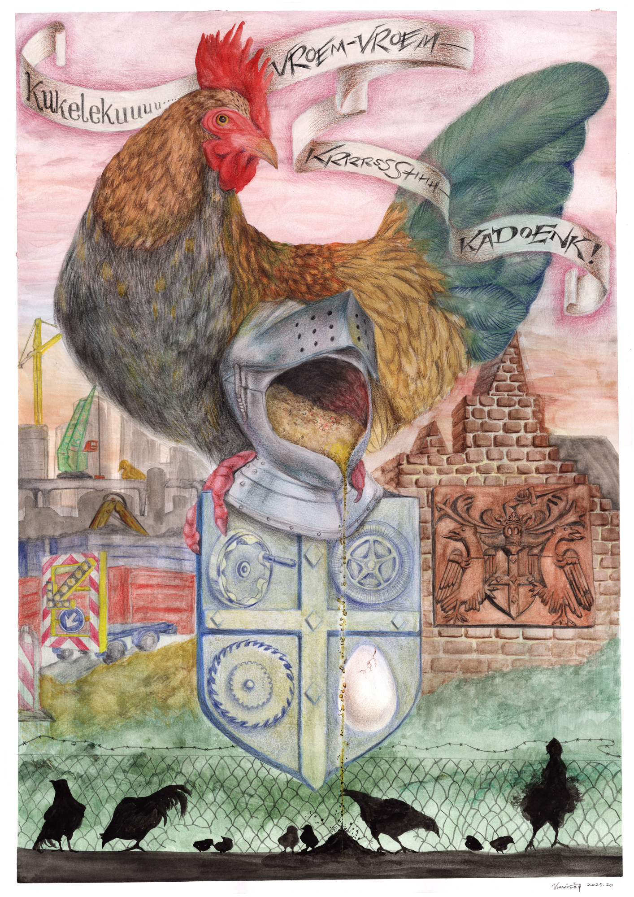

Theme Song of Binckhorst
Chickens have roamed the neighbourhood of Binckhorst for more than forty years. How they first arrived remains an urban myth. They carved out their place and thrived for generations amid the backdrop of industrial noise—sometimes fed by anonymous neighbours, sometimes sheltered by caretakers, sometimes simply surviving on scraps. In my drawing I reimagine the coat of arms of De Binckhorst, originally from the family who owned Binckhorst Castle. The helmet has become a chicken-feeder deity, endlessly guarding and nourishing the flock. On the shield, a car tire, a gear wheel, a height lever, and a cracking egg symbolise the creative, manufacturing, and automotive industries, as well as the resilience of life in Binckhorst. The theme song of Binckhorst resounds: Kukelekuuuu — vroem-vroem — krrrssshhh — kadoenk!
Medium
Water color and color pencil on paper,
A2
Edition
Press
Stadstekenaar
